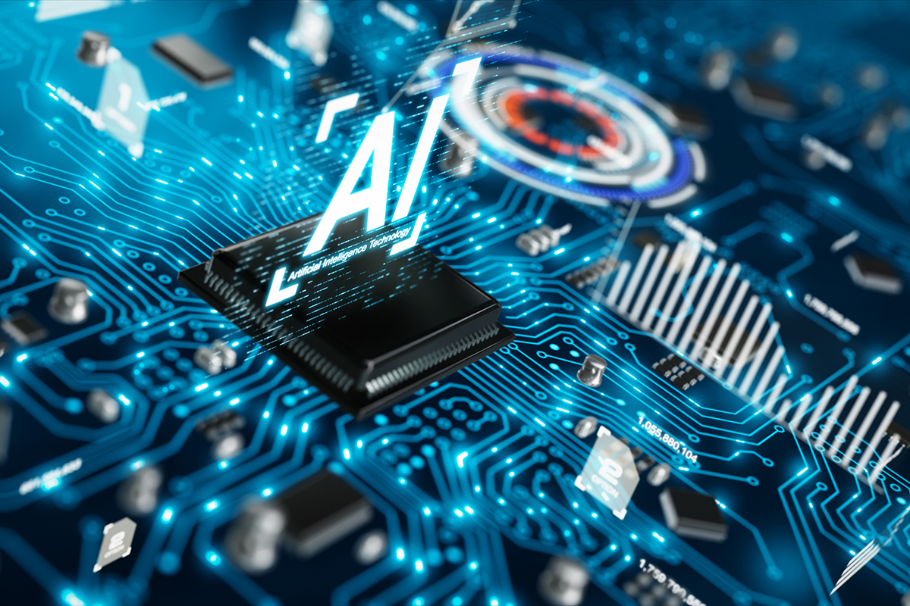

.jpeg)
The role of artificial Intellegance in medicin
The future of ‘standard’ medical practice might be here sooner than anticipated, where a patient could see a computer before seeing a doctor.
Through advances in artificial intelligence (AI), it appears possible for the days of misdiagnosis and treating disease symptoms
rather than their root cause to move behind us. Think about how many years of blood pressure measurements you have, or how much
storage you would need to delete to fit a full 3D image of an organ on your laptop? The accumulating data generated in clinics
and stored in electronic medical records through common tests and medical imaging allows for more applications of artificial
intelligence and high performance data-driven medicine. These applications have changed and will continue to change the way both doctors
and researchers approach clinical problem-solving.
However, while some algorithms can compete with and sometimes outperform clinicians in a variety of tasks, they have yet to be fully
integrated into day-to-day medical practice. Why? Because even though these algorithms can meaningfully impact medicine and bolster Similar
to how doctors are educated through years of medical schooling, doing assignments and practical exams, receiving grades, and learning from mistakes,
AI algorithms also must learn how to do their jobs. Generally, the jobs AI algorithms can do are tasks that require human intelligence to complete,
such as pattern and speech recognition, image analysis, and decision making.
However, humans need to explicitly tell the computer exactly what they would look for in the image they give to an algorithm, for example.
In short, AI algorithms are great for automating arduous tasks, and sometimes can outperform humans in the tasks they’re trained to do.
the power of medical interventions, there are numerous regulatory concerns that need addressing first.
What makes an algorithm intelligent?
Similar to how doctors are educated through years of medical schooling, doing assignments and practical exams, receiving grades,
and learning from mistakes, AI algorithms also must learn how to do their jobs.
Generally, the jobs AI algorithms can do are tasks that require human intelligence to complete,
such as pattern and speech recognition, image analysis, and decision making.
However, humans need to explicitly tell the computer exactly what they would look for in the image they give to an algorithm,
for example. In short, AI algorithms are great for automating arduous tasks,
and sometimes can outperform humans in the tasks they’re trained to do.
In order to generate an effective AI algorithm, computer systems are first fed data which is typically structured
meaning that each data point has a label or annotation that is recognizable to the algorithm (Figure 1).
After the algorithm is exposed to enough sets of data points and their labels, the performance is analyzed to ensure accuracy,
just like exams are given to students. These algorithm “exams” generally involve the input of test data to which programmers.
already know the answers, allowing them to assess the algorithms ability to determine the correct answer. Based on the testing results,
the algorithm can be modified, fed more data, or rolled out to help make decisions for the person who wrote the algorithm.

There are many different algorithms that can learn from data. Most applications of AI in medicine read in some type of data,
either numerical (such as heart rate or blood pressure) or image-based (such as MRI scans or Images of Biopsy Tissue Samples) as an input.
The algorithms then learn from the data and churn out either a probability or a classification. For example,
the actionable result could be the probability of having an arterial clot given heart rate and blood pressure data,
or the labeling of an imaged tissue sample as cancerous or non-cancerous. In medical applications, an algorithm’s performance
on a diagnostic task is compared to a physician’s performance to determine its ability and value in the clinic.
